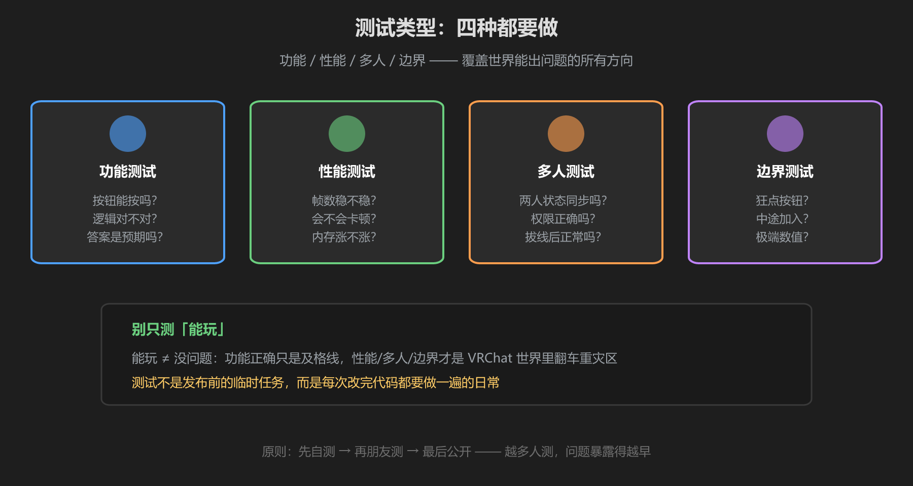
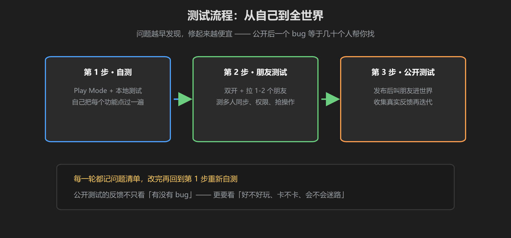

第 1 篇：为什么要测试 — 测试类型、测试流程、VRChat 世界的特殊性
「能玩」和「能给别人玩」是两回事。测试的意义不是找自己的毛病，而是替未来的每一个玩家踩坑 —— 你踩过一遍，他们就不用踩了。
1. 测试的意义
发布出去的世界，每一个玩家都是「第一次玩」：他们不知道你的设计意图，也不会按你想的顺序操作。测试就是站在玩家的视角，把世界当陌生人第一次打开来体验一遍。
核心心态：测试不是「验证我做得对」，而是「证明我可能哪里不对」。改完代码、动过场景、加过功能 —— 都要重新测。一次测试覆盖不了所有时间点。
2. 测试类型：四种都要做

图：功能 / 性能 / 多人 / 边界 —— 四种测试缺一不可
| 类型 | 测什么 | 例子 |
|---|---|---|
| 功能测试 | 按钮、逻辑、反馈是否符合预期 | 按按钮能加分吗？UI 更新吗？ |
| 性能测试 | 帧数、卡顿、内存占用 | 粒子多的场景会不会掉帧？ |
| 多人测试 | 同步、权限、掉线恢复 | 两人同时按按钮，分数一致吗？ |
| 边界测试 | 极端情况下世界是否崩溃 | 狂点按钮、新玩家中途加入、拔线 |
别只测「能玩」：功能正确只是及格线。VRChat 世界里翻车最多的从来不是「功能不对」，而是「多人不同步」和「边界情况崩了」。
3. 测试流程：从自己到全世界

图：自测 → 朋友测试 → 公开测试，问题越早发现修起来越便宜
- 自测：自己用 Play Mode 和 Build & Test 把每个功能点过一遍（第 2 篇）
- 朋友测试：拉 1-2 个朋友，重点测多人同步、权限、抢操作（第 2 篇双开）
- 公开测试：发布后叫朋友进世界，收集真实反馈，继续迭代
4. VRChat 世界的特殊性：别人会乱玩！
普通游戏玩家会守规矩，VRChat 玩家不会。你要为以下情况专门做边界测试：
- 抢按钮：十个人同时按同一个交互按钮 —— 你的判定逻辑防得住吗？
- 拔线：玩家玩到一半直接退出 —— 世界里的状态会不会卡死在「等待他」？
- 新玩家中途加入：游戏进行到一半有人进世界 —— 他能看到正确的状态吗？会不会从 0 开始导致错乱？
记住这条铁律：VRChat 世界里的任何玩家都能随时进入、随时退出、随时做任何交互。你的世界必须为「最坏情况的组合」设计，而不是为「想象中的理想玩家」设计。
学前检查清单
- 理解了四种测试类型（功能/性能/多人/边界）
- 能说出自己的世界的测试流程（自测→朋友→公开）
- 列出了 3 个 VRChat 特有的边界场景（抢按钮/拔线/中途加入）